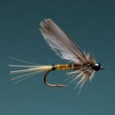
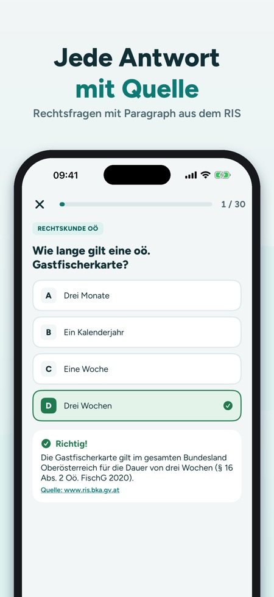
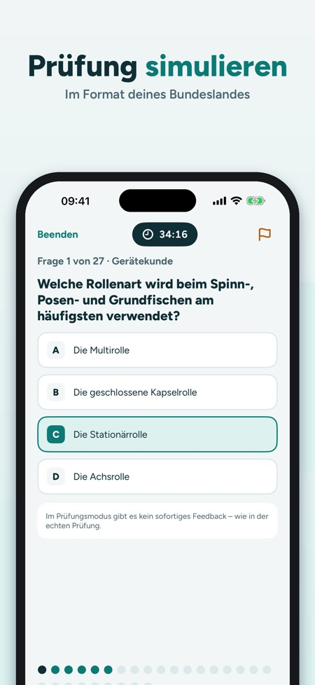

Fischerkurs & Prüfungsfragen. Austrian fishing licence exam: over 680 questions per state with sources, closed seasons, fish quiz and exam simulation. Vienna, Lower and Upper Austria. In German.



Study for the Austrian fishing licence exam (Fischerprüfung) in your federal state: Austrian fishing law and the fish of Austrian waters, for Vienna, Lower Austria and Upper Austria.
Please note: the app is in German, like the exam itself. It covers Austrian fishing law only and is not suitable for the German Fischerprüfung.
STUDY BY TOPIC
- Over 680 practice questions per state, each with an explanation and a source link
- Sources: state law with the paragraph from RIS (the Austrian legal information system), animal welfare from the Umweltbundesamt and the Tierschutz-Schlachtverordnung, other topics with a link to read on (e.g. AGES, EU law, Wikipedia)
- Fish, waters, tackle, your state's fishing law, animal welfare, fish diseases, stock management
- Progress per topic and exam readiness at a glance
EXAM SIMULATION
- In your state's format: Vienna 50 questions in 120 minutes, Lower Austria 20 questions in 30 minutes, each with a minimum per topic
- Upper Austria: 27 questions, pass mark 60 % (modelled on the exam format)
- Answers revealed at the end, result per topic
- Enter your exam date and the start screen counts down the days
MY MISTAKES
- Wrong answers are collected and disappear after two correct answers in a row
FISH, CLOSED SEASONS, MINIMUM SIZES
- 24 native species with identification features and our own drawings
- Closed season and minimum size (Brittelmaß) for your state with paragraph and check date
- Fish quiz: which fish is this?
KNOTS AND TACKLE
- 10 knots and rigs step by step
BUY ONCE, NO SUBSCRIPTION
Try 30 questions and one simulation before buying. The full version unlocks all questions, simulations, species and knots for all states. Works offline.
More states will follow, next Styria, Tyrol and Salzburg.
Note: Fischerprüfung Österreich is an independent study app and is not affiliated with the state fishing associations, the Wiener Fischereiausschuss or any authority. All questions are written by us with a source; no guarantee. The rules of your fishing water may be stricter.